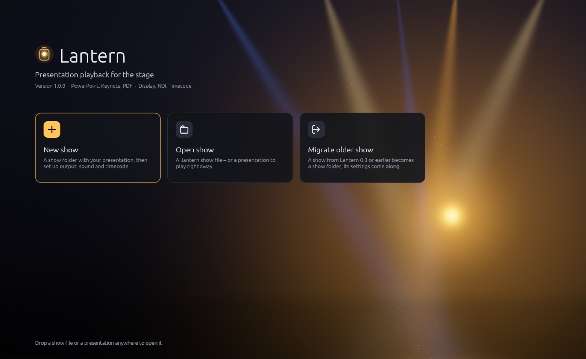

Showtime Suite
Showtime SuiteLantern
Plays PowerPoint files on a display and over NDI, slide by slide with GO or on timecode. It is a playback tool, not an editor: make the presentation in PowerPoint, Keynote or LibreOffice.
For macOS, Windows and Linux. Easiest with Showtime Suite, which also keeps it up to date.


What it does
PowerPoint as it looks
Every slide rendered in the output resolution. Also .ppt, .odp, .key and plain PDFs.
Live layout
Slide list with thumbnails, LIVE and NEXT, big GO and GO back, blackout, notes and clocks.
Builds
Shapes and bullet points that come with a click in PowerPoint come with GO, step by step.
GO or timecode
Trigger with a button, a clicker, OSC or Show Master, or at timecode keyframes (LTC, MTC, RTP-MIDI).
Outputs
Full screen on any display, on several at once, and as an NDI source. A test picture for setting up.
Stage display
Time, countdown, messages, the slide now and next and the notes, on a display, over NDI or in a browser.
Web remote and show log
A remote page for a phone; every cue logged with time of day and timecode.